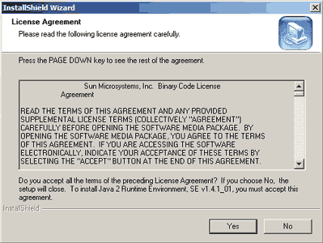
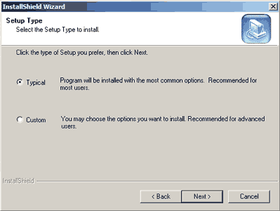
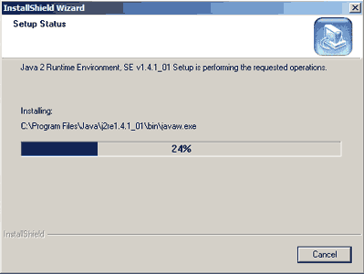

| The Java Installation Wizard
When you run the installation wizard, you'll see a series of screens like those shown below. There may be minor differences in what you see on your screen, depending on what operating system you are using. |
|
1.  2.  3.  |